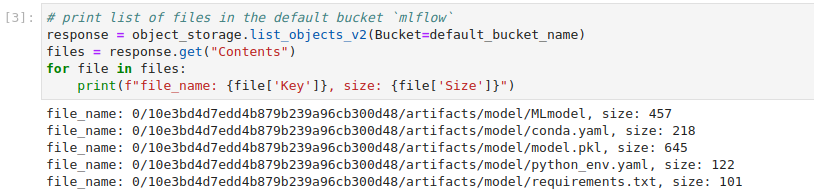
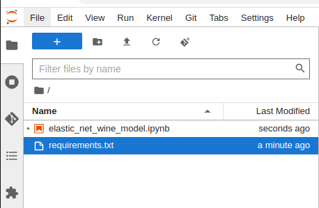

Model Registry¶
Introduction¶
MLFlow is a platform to streamline machine learning (ML) development, including tracking experiments, packaging code into reproducible runs, and sharing and deploying models.
MLFlow integration with Kubeflow on vSphere requires a relation between MLFlow and MinIO operator, which you learn more in this section. MinIO is used to store artifacts produced by MLFlow runs (files, models, images, in-memory objects, model summary, etc). In the last part of this section, you learn how to access the artifact store using MinIO client or boto3 APIs.
For the basic knowledge, please refer to mlfow-quick-start and to understand how it works, please refer to its source code.
Get started¶
Deploy mlflow-server and mlflow-db¶
This section guides you through the integration of MLFlow with Kubeflow on vSphere using Juju. This integration enables true automated model lifecycle management using MLFlow metrics and the MLFlow model registry.
In an Ubuntu terminal window, run the following commands to deploy mlflow-server and mlflow-db:
juju deploy mlflow-server
juju deploy charmed-osm-mariadb-k8s mlflow-db
For mlflow-server to become active, you need to integrate applications that have been deployed with these commands:
juju relate minio mlflow-server
juju relate istio-pilot mlflow-server
juju relate mlflow-db mlflow-server
juju relate mlflow-server admission-webhook
Run watch juju status to watch the application status of mlflow-db to become active and mlflow-server to be waiting for mysql relation data. This takes about a minute.
Run an example model with Kubeflow on vSphere¶
Note
Temporary workaround for missing pod-defaults
Run the following command to make a copy of pod defaults to the user’s namespace admin:
k8s kubectl get poddefaults mlflow-server-minio -o yaml -n kubeflow | sed 's/namespace: kubeflow/namespace: admin/' | k8s kubectl create -f -
Create a new Notebook server refer to Notebooks, taking care to specify the mlflow-server-minio configuration, by ticking the box next to it. This ensures that the correct environment variables are set so that the MLFlow SDK can connect to the MLFlow server.
For an example code, upload or paste the Elastic Net wine model notebook to the Notebook server.
Run the first two cells and observe that your model metrics are recorded in MLFlow as shown in the cell output below. You can see the RMSE, MAE, and R2 for the run model.
Run the third cell to view a list of files in the object storage.
In the last cell, replace <minio file path> with the path of the file you want to download. Use the object path listed in the output of the previous cell, and replace <notebook server file path> with the desired destination file for the downloaded object.
For example, to download requirements.txt listed in the above screenshot, run object_storage.download_file(default_bucket_name,'0/10e3bd4d7edd4b879b239a96cb300d48/artifacts/model/requirements.txt','requirements.txt')
The downloaded object will show up in the file browser on the left.
See also